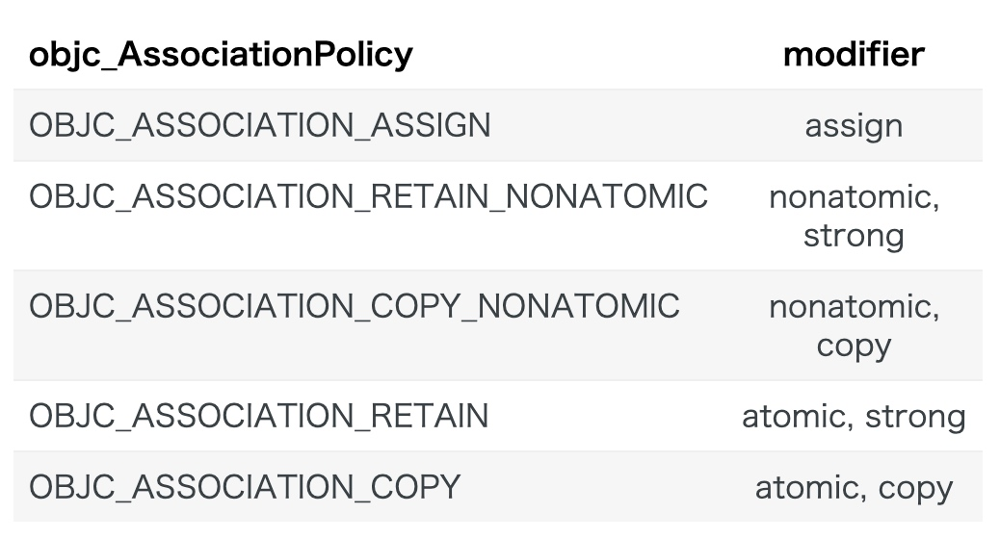
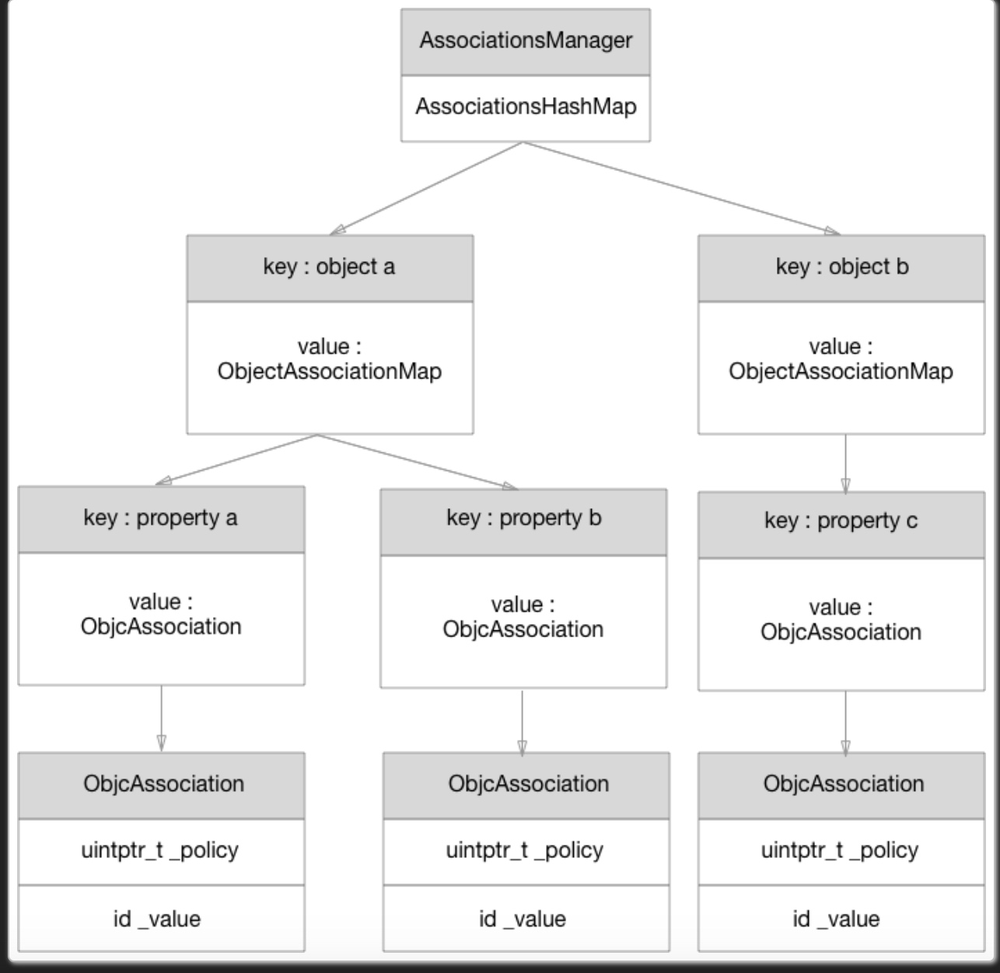

关联对象 AssociatedObject 完全解析
相关面试题:
关联对象有什么应用，系统如何管理关联对象？其被释放的时候需要手动将所有的关联对象的指针置空么？
先回答问题:
- 关联对象的作用是可以为分类增加实例变量和存取发法(分类不能直接添加)
- 系统使用AssociationsManager管理关联对象
在分类中,因为类的实例变量布局已经固定,使用@property 已经无法向固定的布局中添加新的实例变量(这样做可能会覆盖之类的实例变量),所以我们需要使用关联对象以及两个方法来模拟构成属性的三个要素.
在分类中@property 并不会自动生成实例变量以及存取方法,所以需要使用关联对象为已经存在的类添加属性,例如:
#import "DKObject+Category.h"
#import <objc/runtime.h>
@implementation DKObject (Category)
- (NSString *)categoryProperty {
return objc_getAssociatedObject(self, _cmd);
}
- (void)setCategoryProperty:(NSString *)categoryProperty {
objc_setAssociatedObject(self, @selector(categoryProperty), categoryProperty, OBJC_ASSOCIATION_RETAIN_NONATOMIC);
}
@end
我们使用了 objc_getAssociateedObjcet以及 objc_serAssociatedObject 来模拟属性的存取方法,使用关联对象来模拟实例变量
这里有两个需要解释的问题:
- 为什么向方法中传入@selector(catagoryProperty)?
- OBJC_ASSOCIATION_RETAIN_NONATOMIC是干什么的
关于第一个,我们先看这两个方法的原型;
id objc_getAssociatedObject(id object, const void *key);
void objc_setAssociatedObject(id object, const void *key, id value, objc_AssociationPolicy policy);
@selector(categoryProperty)其实也就是参数中的 key,其实可以使用静态指针 stati void * 类型的参数来代替,不过这里强烈建议使用@selector(categoryProperty)作为key 传入.因为这种方法省略了生命参数的代码,并且能很好的保证 key 的唯一性.
关于OBJC_ASSOCIATION_RETAIN_NONATOMIC,其实就是内存管理语句.

注意:关联对象的内存管理策略中没有对应的 weak.如果确实需要使用 weak 应该怎么处理呢?
最简单的方法是使用 block 包起来,例如:
-(void)setWeakvalue:(NSObject *)weakvalue {
__weak typeof(weakvalue) weakObj = weakvalue;
typeof(weakvalue) (^block)() = ^(){
return weakObj;
};
objc_setAssociatedObject(self, weakValueKey, block, OBJC_ASSOCIATION_COPY_NONATOMIC);
}
-(NSObject *)weakvalue {
id (^block)() = objc_getAssociatedObject(self, weakValueKey);
return block();
}
首先我们在 setter 方法里面使用了一个weak 的局部变量 weakObj 来存储值,并在 block 中将其捕获并返回,由于 weakObj 是弱引用,所以不会修改对象的引用计数,当对象释放时,由于 weakObj 的 weak 属性,它在释放后也会指向 nil,所以在 getter 返回的时候也就是 nil,也就是模拟了 weak 释放后自动置为 nil.
objc_setAssociatedObject
void _object_set_associative_reference(id object, void *key, id value, uintptr_t policy) {
// 关联对象使用 ObjcAssociation 这个c++对象来存储。
// 设置新对象，那么有可能有老的对象会被废弃。那么新建一个ObjcAssociation对象，之后用来存储老的对象
ObjcAssociation old_association(0, nil);
// acquireValue函数： 设置新的对象的retainCount，也就是对他进行手动内存管理
id new_value = value ? acquireValue(value, policy) : nil;
{
AssociationsManager manager;
AssociationsHashMap &associations(manager.associations());
disguised_ptr_t disguised_object = DISGUISE(object);
// 如果确实是要设置新关联对象的时候
if (new_value) {
// break any existing association.
AssociationsHashMap::iterator i = associations.find(disguised_object);
// 这个对象之前设置过关联对象，也就是说该对象的关联对象数量大于1
if (i != associations.end()) {
// secondary table exists
ObjectAssociationMap *refs = i->second;
ObjectAssociationMap::iterator j = refs->find(key);
// 寻找全局的关联对象表，如果存在老对象的话
if (j != refs->end()) {
// 存储老对象到之前新建的ObjcAssociation对象中
old_association = j->second;
// 设置新的关联对象
j->second = ObjcAssociation(policy, new_value);
}
// 不存在老对象，直接设置新关联对象
else {
(*refs)[key] = ObjcAssociation(policy, new_value);
}
}
// 这个对象之前没有设置过任何的关联对象
else {
// create the new association (first time).
ObjectAssociationMap *refs = new ObjectAssociationMap;
associations[disguised_object] = refs;
(*refs)[key] = ObjcAssociation(policy, new_value);
// 将对象的isa的has_assoc字段设置成true
object->setHasAssociatedObjects();
}
}
// 要将关联对象设成 nil，也就是取消该关联对象。先存老对象，再在全局表中删除该关联对象
else {
// setting the association to nil breaks the association.
AssociationsHashMap::iterator i = associations.find(disguised_object);
if (i != associations.end()) {
ObjectAssociationMap *refs = i->second;
ObjectAssociationMap::iterator j = refs->find(key);
if (j != refs->end()) {
old_association = j->second;
refs->erase(j);
}
}
}
}
// 释放老对象，retainCount相关，内存管理相关
if (old_association.hasValue()) ReleaseValue()(old_association);
}
可以看到设置新的关联对象其实很简单：
- 现在全局关联对象表中寻找这个 key
- 先存原来关联对象
- 再设置新的关联对象
- 释放原有的关联对象
关联对象的实现
关联对象使用的是全局的表来存储所有关联对象,如图:

关联对象是和对象一一对应的,而不是和类一一对应的
- 所有的关联对象都由一个AssociationsManager对象来管理,这个对象里有一个AssociationsHashMap.
- AssociationsHashMap由许多 key-value 构成.key 是对象的地址,value 是一个ObjectAssociationMap,也就是所谓的关联对象
- ObjectAssociationMap就是关联对象,每个关联对象里面包含多个 key-value 对,key 是属性名,value 是ObjcAssociation,也就是相当于属性对应的实例变量.
- ObjcAssociation相当于实例变量,这个结构体有两个成员,_policy 属性的内存管理语句,_value 属性的值
总结:
- category 可以给现有类添加属性,方法,协议,但是不能添加实例变量
- 添加属性对应的实例变量需要使用关联对象来实现
- category 里面的方法不会覆盖掉原有同名方法,只是会提前检索到,所以感觉是被覆盖掉了
- 对于系统自带的类,在 runtime 时才会加载 category,但是自定义的分类在编译期就已经全部加载了,就像不存在分类,但是存在一个大大的自定义类一样.
参考:
https://draveness.me/ao
http://vanney9.com/2017/07/14/association-object-and-retain-count/
http://vanney9.com/2017/06/07/objective-c-runtime-category/
https://www.jianshu.com/p/1b0a1f9ecf39
Copyright © 2015 Powered by MWeb, Theme used GitHub CSS.